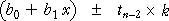

Interval estimates
In the previous page, we showed that the same value,
 = b0 + b1 x
= b0 + b1 x
is used both to estimate the mean response at x and to predict a new individual's response at x. However the errors are different in the two situations — the errors tend to be larger for predicting a new value.
In both situations, it is more informative to give an interval of 'likely' values rather than a single value.
Estimating mean response
A 95% confidence interval for the mean response takes the form
We do not provide a formula for the standard error on the right of this formula -- the details are not important and statistical software will tell you the value.
Predicting a new individual's response
For prediction, a similar interval can be found

where the constant k is greater than the corresponding standard error for the confidence interval. (Again we do not provide a full formula. Statistical computer software will perform the calculations for you.)
A 95% prediction interval is wider than a 95% confidence interval for the distribution's mean.
Extrapolation
These 95% confidence intervals and 95% prediction intervals are valid within the range of x-values about which we have collected data, but they should not be relied on for extrapolation. Both intervals assume that the normal linear model describes the process, but we have no information about linearity beyond the x-values that have been collected.
From a scatterplot, we can check that there is approximate linearity within the observed range of x-values but there is no way to check linearity beyond the observed data.
Grass intake of dairy cows
An experiment was conducted to investigate the grazing behaviour of dairy cows. Four cows were studied while they grazed on 48 different plots of grass, each of which had different sward height. In each plot, the total grazing time was recorded and the grass intake rate (in grams dry matter per minute) was estimated by sampling from the plot before and after the experiment. The diagram below shows the relationship between grass intake rate and sward height.
Drag the slider to display...
Because of uncertainty about linearity of the relationship, the confidence intervals and prediction intervals are unreliable if X is greater than 12 or less than 35.